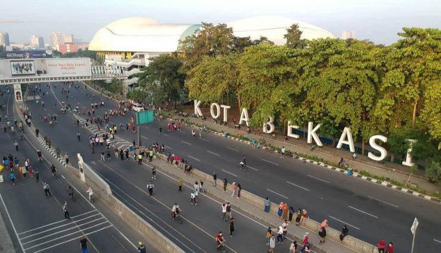

Sejarah
Bekasi memiliki sejarah yang kaya, dimulai dari era Kerajaan Tarumanegara yang berpusat di wilayah Jawa Barat. Dalam prasasti Tugu, nama "Chandrabaga" disebut, yang diyakini merujuk pada Sungai Cakung di Bekasi. Pada masa kolonial Belanda, Bekasi menjadi salah satu pusat pertanian dan perdagangan penting.
Setelah kemerdekaan Indonesia, Bekasi terus berkembang menjadi kota industri hingga akhirnya resmi menjadi kota administratif pada tahun 1982 dan berstatus kota otonom pada tahun 1996.
Geografis

Kota Bekasi memiliki luas wilayah sekitar 210,49 km², berbatasan dengan Kabupaten Bekasi di sebelah timur, Kota Jakarta Timur di barat, Kabupaten Karawang di utara, dan Kota Depok di selatan.
Bekasi memiliki dataran rendah dengan sungai-sungai utama seperti Sungai Bekasi dan Sungai Citarum yang melintasi wilayahnya. Cuaca di Bekasi umumnya tropis dengan musim hujan dan kemarau yang bergantian sepanjang tahun.
Wisata
Taman Buaya Indonesia Jaya
Taman ini adalah salah satu destinasi wisata unik di Bekasi, yang merupakan pusat penangkaran buaya. Pengunjung dapat melihat berbagai jenis buaya dalam habitatnya, menyaksikan atraksi buaya, serta mendapatkan edukasi tentang satwa ini.
Hutan Kota Patriot Bina Bangsa
Sebagai ruang hijau di tengah kota, Hutan Kota Patriot menawarkan tempat rekreasi dengan suasana asri. Pengunjung dapat berolahraga, piknik, atau menikmati udara segar sambil belajar tentang pentingnya pelestarian lingkungan.